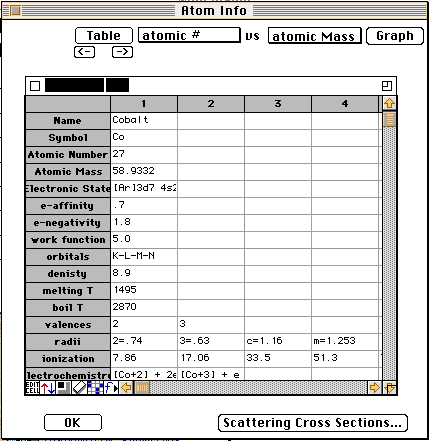
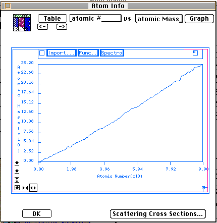

Distributed By: Virtual Labs
Atomic Informaton General
Desktop Microscopist has a number of values stored for each element. These
values include the atomic name, atomic symbol, atomic number, average atomic
weight, atomic radius for typical ionic, covalent, metallic and van der
Waal states. It also has nuclear information such as isotopes, isotope relative
abundance, cross-sections and spins. Electronic information includes ground
state electronic configuration, electronic affinity, the work function for
the standard crystal, limited electrochemical information, electro-negativity,
crystal structures and transition temperatures, melting and boiling points
and density at standard temperature and pressure. It also stores available
orbitals and valances. Finally, Desktop Microscopist has a set of atomic
electron and x-ray scattering factors which can be added to and edited.
To gain access to this information and to edit the atomic scattering factors,
activate the Periodic Table from the Atomic Info menu item of the Edit Menu.
Atomic Info Dialog Box
PATH...Edit Menu:Atomic Parameters:Periodic Table Dialog:<Click
on an
Element>

- The atomic information appears in a static dialog box. The dialog
box contains a great deal of information which is displayed as pop-up menus.
This format was chosen to keep the information overload to a minimum. Its
sole additional function is to allow the user access to the Electron and
X-ray scattering factor editing dialog box.
- The Atomic Scattering Editor Dialog Box is found by first selecting
the proper beam type using the Beam Type: pop-up menu and then clicking
on the .i.Atomic Scattering Factor; button. .i.Atomic Info:Atomic Scattering
Factor;.i.Atomic Info:Beam Type;.i.Beam:Type;
- The following is a list of the various fields, their definitions and
the units used when storing the data:
Units/Field Description
- Name Standard name for Element
- Symbol: One or two letter symbol for element
- Atomic Num: Atomic number (number of protons) for element
integer
- Atomic Mass The average atomic mass for given element.
- Field:Isotope. List of isotopes by atomic mass number
- %. Percentage of isotope in natural abundance
- µ . Nuclear Magnetic Moment . (nm)
- Thermal(barns) Thermal Neutron Cross Section barns
- Spin. Nuclear Spin. Spin Quantum #
- Isotope List of isotope / usually not as complete as 1st
- b scattering length. (cm)
- Coherent. Coherent scattering cross section. barns
- Total Total scattering cross section. barns
- Electronic Info The electronic configuration using standard.
use s,p,d,f orbits
- Orbitals Listing of potential orbitals available to element.
shells
- Valences The common valence states for element. integers
- Radii. The atomic radii for common valence states. Å
- Ionization. Ionization Potentials for each element. eV
- e-affinity Atomic electron affinities. eV
- e-negativity atomic electron negativities eV
- work function Energy Required to extract e- from crystal.
eV
- Electrochemical standard reduction potentials at STP eV
- Beam Type High energy beam scattering factor
- Crystals Crystalline form which Element exists. Pearson's
Name
- Transition T. Transition Temperature for respective crystal.
Degree Celsius
- Density Density of crystalline form at STP. gm/cm3
- Tm Melting Temperature (SP). Degree Celsius
- Tb . Boiling Temperature (SP). Degree Celsius

Atomic Information in Graph Mode
Author: J.ames
T. Stanley
 Desktop
Manual:Dialog Boxes
Desktop
Manual:Dialog Boxes
Distributed By: Virtual Labs
Last Updated:1/12/96 Sat, Apr 27, 1996